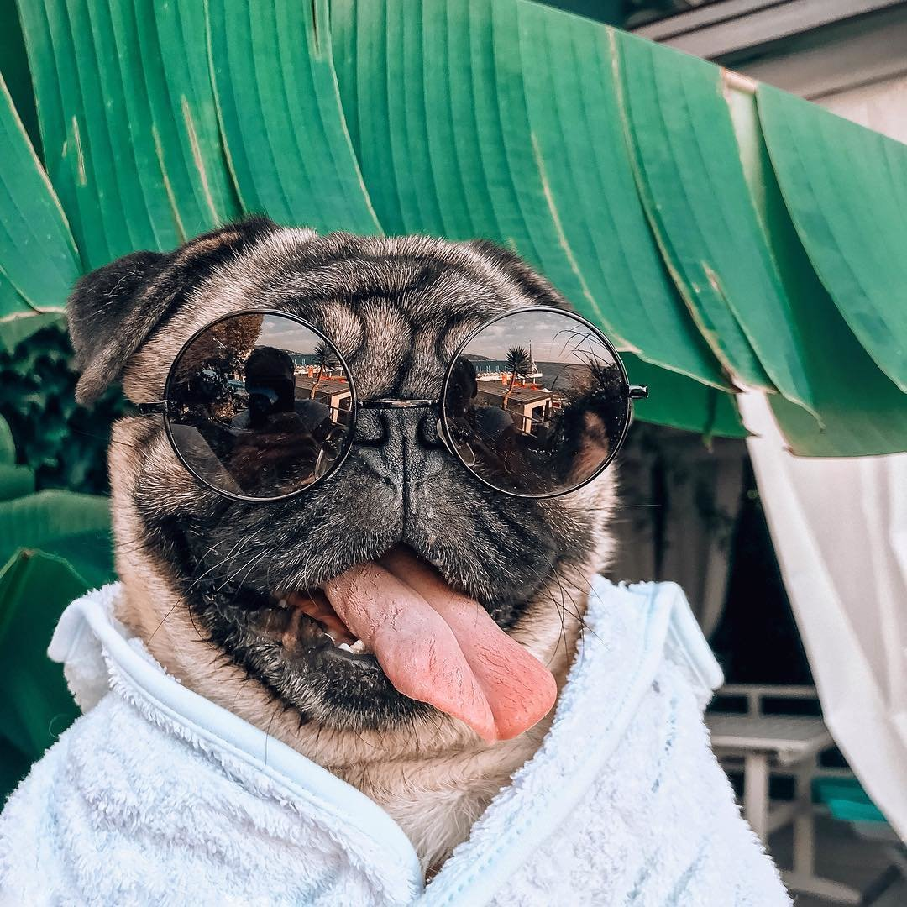
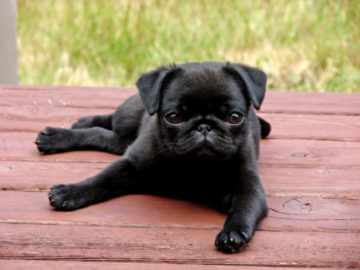

В зависимости от возраста, мопсам нужно разное время для выгула. Так, щенков выгуливать нужно чаще и дольше, чем взрослых собак, которым хватит недолгой прогулки 1 раз в день. Во время выгула нужно обращать внимание на состояние питомца, нельзя давать ему мерзнуть или перегреваться. Мопсы имеют проблемы с дыханием, поэтому нужно избегать прогулок в слишком жаркую или морозную погоду. После прогулки нужно обязательно осмотреть лапы и глаза питомца, так как он мог повредить лапы сухой травой или его могло укусить какое-либо насекомое, например клещ. Нужно обязательно мыть собаке лапы после прогулки щеткой или хотя бы протереть их влажными салфетками.
Для хорошего самочувствия питомца нужно сделать его рацион питания здоровым и сбалансированным. Мопсы имеют маленькие желудки, которые не усваивают жидкую пищу, поэтому их стоит кормить только твердой едой. Еда при этом должна быть в идеале комнатной температуры и без добавления соли.
Количество потребляемых калорий и состав питания нужно устанавливать в зависимости от времени года и от состояния здоровья собаки. Мопсов нельзя кормить слишком много, так как они имеют склонность к ожирению. Если стало заметно, что собака стала толстеть, значит нужно уменьшить размер порции. Так, уход за мопсом требует ответственного подхода, но именно правильный уход будет поддерживать, и сохранять его жизнь и здоровье долгие годы.